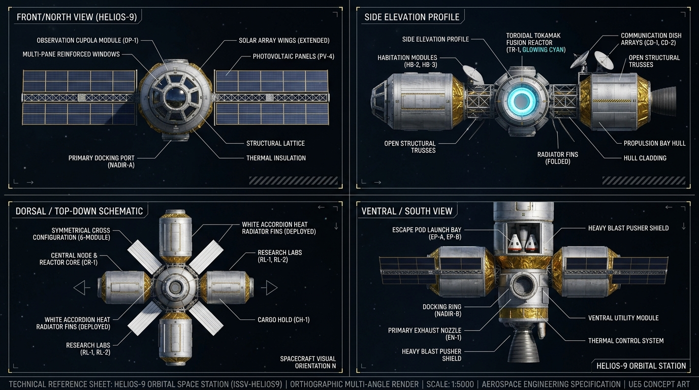
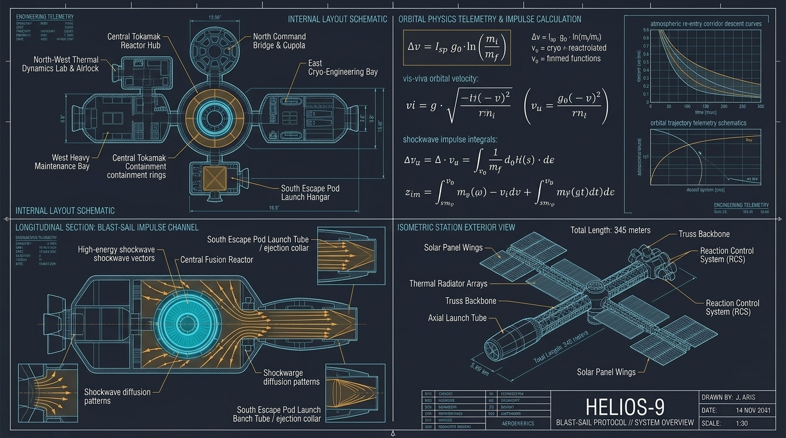
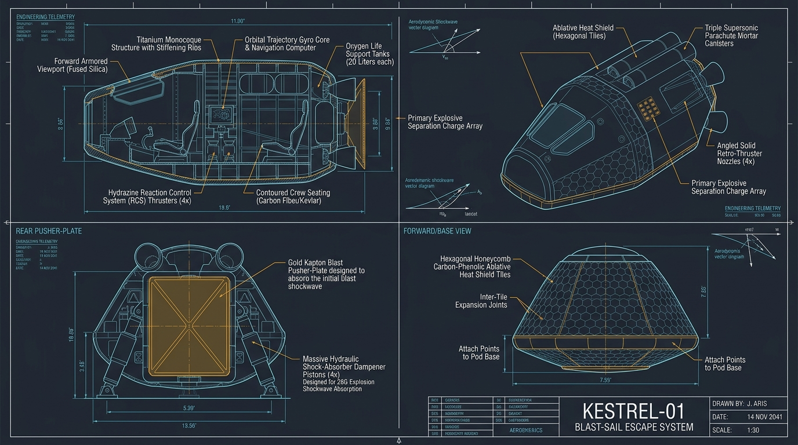
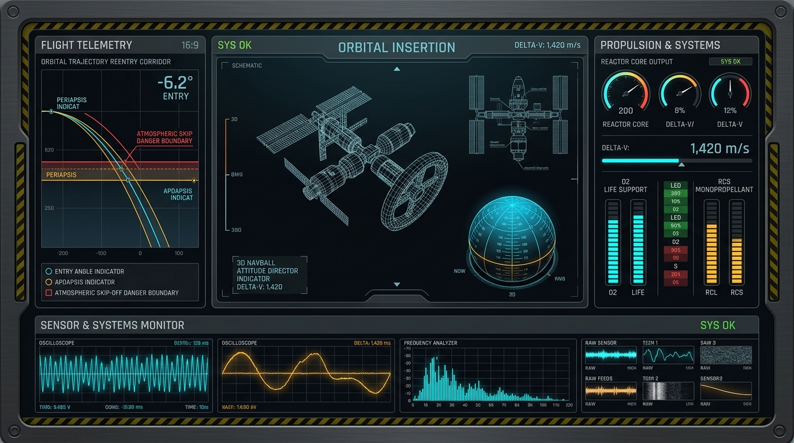

臨界軌道脱出
残された時間は、5分30秒。
崩壊する宇宙ステーションから、
地球へ帰還せよ。
システムを準備しています…
高度 418km の低軌道を周回する研究ステーション「HELIOS-9」はデブリ群の直撃により致命的な損傷を受け、南ハンガーの脱出ポッド「KESTREL-01」もメイン推進系を喪失した。 唯一の生還手段は、中央トカマク対消滅反応炉 [TR-1] を指向性臨界爆縮させ、その爆発衝撃波（ブラスト・リコイル）をポッド後部のプッシャープレートで受け止めて減速量 ΔV = 3.20 km/s を獲得し、地球大気圏へ帰還することだけだ！
■ 高難易度エンジニアリング＆物理演算システム：
本作では単にアイテムを拾うだけでなく、質量・推力・衝撃G・進入角・開傘マッハ数・酸素残量のすべてがリアルタイム物理演算で評価される。



